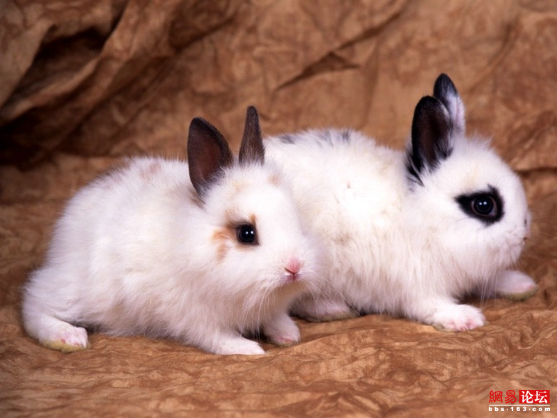

<!DOCTYPE html>
<html>
<head lang="zh-CN">
<meta charset="UTF-8">
<meta name="viewport"
      content="width=device-width,initial-scale=1.0,maximum-scale=1.0,minimum-scale=1.0,user-scalable=no">
<meta http-equiv="X-UA-Compatible" content="IE=edge,chrome=1">
<meta name="apple-mobile-web-app-capable" content="yes">
<meta name="apple-mobile-web-app-status-bar-style" content="black">
<meta name="apple-touch-fullscreen" content="yes">
<meta name="format-detection" content="telephone=no,email=no">
<meta name="author" content="www.tongbaotu.com">
<!--<link rel="stylesheet" type="text/css" href="css/base.css">-->
<style type="text/css">
html {
    font-size: 100px;
}

@media screen and (max-width: 640px) {
    html {
        font-size: 100px;
    }
}

@media screen and (max-width: 580px) {
    html {
        font-size: 90px;
    }
}

@media screen and (max-width: 540px) {
    html {
        font-size: 84px;
    }
}

@media screen and (max-width: 480px) {
    html {
        font-size: 75px;
    }
}

@media screen and (max-width: 428px) {
    html {
        font-size: 62px;
    }
}

@media screen and (max-width: 360px) {
    html {
        font-size: 56px;
    }
}

@media screen and (max-width: 320px) {
    html {
        font-size: 50px;
    }
}

body, button, dd, dl, dt, fieldset, form, h1, h2, h3, h4, h5, h6, input, legend, li, ol, p, select, table, td, textarea, th, ul {
    margin: 0;
    padding: 0;
}

body, button, input, select, table, textarea {
    font-size: 0.28rem;
    line-height: 1.25em;
    color: #fff;
    font-family: 'microsoft yahei', Verdana, Arial, Helvetica, sans-serif;
}

body {
    color: #333;
}

fieldset, img {
    border: 0
}

ol, ul, li {
    list-style: none
}

address, em {
    font-style: normal
}

a {
    color: #333;
    text-decoration: none;
    outline: none
}

table {
    border-collapse: collapse
}

* {
    -webkit-tap-highlight-color: rgba(0, 0, 0, 0);
}

.clearfix:after {
    visibility: hidden;
    display: block;
    font-size: 0;
    content: " ";
    clear: both;
    height: 0;
}

/* Hides from IE-mac \*/
* html .clearfix {
    height: 1%;
}

/* End hide from IE-mac */

.hide {
    visibility: hidden;
}

.show {
    visibility: visible;
}

/*字号*/
.px20 {
    font-size: 0.20rem;
}

.px22 {
    font-size: 0.22rem;
}

.px24 {
    font-size: 0.24rem;
}

.px26 {
    font-size: 0.26rem;
}

.px28 {
    font-size: 0.28rem;
}

.px30 {
    font-size: 0.30rem;
}

.px32 {
    font-size: 0.32rem;
}

.px34 {
    font-size: 0.34rem;
}

.px36 {
    font-size: 0.36rem;
}

/*动画帧*/
@-webkit-keyframes s1-txt {
    from {
        opacity: 0;
        -webkit-transform: rotateX(-44deg) rotateY(-1.2deg) rotateZ(12deg) translateX(-1.46rem) translateY(-0.12rem) scale(0.47, 1)
    }
    30% {
        opacity: 0;
        -webkit-transform: rotateX(-44deg) rotateY(-1.2deg) rotateZ(12deg) translateX(-1.46rem) translateY(-0.12rem) scale(0.47, 1)
    }
    50% {
        opacity: 1;
        -webkit-transform: rotateX(-44deg) rotateY(-1.2deg) rotateZ(12deg) translateX(0) translateY(-0.12rem) scale(0.47, 1)
    }
    to {
        opacity: 1;
        -webkit-transform: rotateX(0) rotateY(0) rotateZ(0) translateX(0) translateY(0) scale(1, 1)
    }
}

@-webkit-keyframes s2-txt {
    from {
        -webkit-transform: translateX(3rem);
    }
    75% {
        -webkit-transform: translateX(3rem);
    }
    90% {
        -webkit-transform: translateX(-0.08rem);
    }
    to {
        -webkit-transform: translateX(0rem);
    }
}

@-webkit-keyframes s3-txt {
    from {
        -webkit-transform: translateY(0.2rem);
        opacity: 0
    }
    to {
        -webkit-transform: translateY(0rem);
        opacity: 1
    }
}

@-webkit-keyframes s4-txt {
    from {
        -webkit-transform: scale(0, 0)
    }
    30% {
        -webkit-transform: scale(0, 0)
    }
    80% {
        -webkit-transform: scale(1.1, 1.1)
    }
    to {
        -webkit-transform: scale(1, 1)
    }
}

@-webkit-keyframes s5-txt {
    from {
        -webkit-transform: scale(0.8, 0.8);
        opacity: 0;
    }
    10% {
        -webkit-transform: scale(0.8, 0.8);
        opacity: 1;
    }
    to {
        -webkit-transform: scale(1, 1)
    }

}

@-webkit-keyframes tipup {
    from {
        opacity: 0;
        -webkit-transform: translateY(0.1rem)
    }
    20% {
        opacity: 1;
        -webkit-transform: translateY(0rem)
    }
    80% {
        opacity: 1;
        -webkit-transform: translateY(0rem)
    }
    to {
        opacity: 0;
        -webkit-transform: translateY(-0.1rem)
    }
}

@-webkit-keyframes bottom {
    from {
        -webkit-transform: translateY(1rem);
        opacity: 0;
        -webkit-opacity: 0;
    }
    60% {
        -webkit-transform: translateY(1rem);
        opacity: 0;
        -webkit-opacity: 0;
    }
    to {
        -webkit-transform: translateY(0rem);
        opacity: 1;
        -webkit-opacity: 1;
    }
}

/*wrap*/
.wrap {
    min-width: 320px;
    max-width: 640px;
    margin: 0 auto;
    overflow: hidden;
    background: #eee;
}

.wrap ul {
    height: 500%;
}

.wrap ul.ani {
    transition: margin 0.5s;
}

.wrap ul li {
    height: 20%;
    position: relative;
    overflow: hidden;
}

.wrap ul li.s1 {
    /*background: url(images/s1bg.jpg) no-repeat;*/
    /*background-size: 100% 100%;*/
    /* IE10 Consumer Preview */
    background-image: -ms-radial-gradient(center top, circle farthest-corner, #94FFB4 0%, #15A868 100%);

    /* Mozilla Firefox */
    background-image: -moz-radial-gradient(center top, circle farthest-corner, #94FFB4 0%, #15A868 100%);

    /* Opera */
    background-image: -o-radial-gradient(center top, circle farthest-corner, #94FFB4 0%, #15A868 100%);

    /* Webkit (Safari/Chrome 10) */
    background-image: -webkit-gradient(radial, center top, 0, center top, 553, color-stop(0, #94FFB4), color-stop(1, #15A868));

    /* Webkit (Chrome 11+) */
    background-image: -webkit-radial-gradient(center top, circle farthest-corner, #94FFB4 0%, #15A868 100%);

    /* W3C Markup, IE10 Release Preview */
    background-image: radial-gradient(circle farthest-corner at center top, #94FFB4 0%, #15A868 100%);
}

.wrap ul li.s2 {
    background-color: #723182;
    background-image: -webkit-linear-gradient(79deg, #723182, #7e6882);
    background-image: -moz-linear-gradient(79deg, #723182, #7e6882);
    background-image: -o-linear-gradient(79deg, #723182, #7e6882);
    background-image: linear-gradient(11deg, #723182, #7e6882);
}

.wrap ul li.s3 {
    /* IE10 Consumer Preview */
    background-image: -ms-linear-gradient(bottom, #97A0F7 0%, #2C62F7 100%);

    /* Mozilla Firefox */
    background-image: -moz-linear-gradient(bottom, #97A0F7 0%, #2C62F7 100%);

    /* Opera */
    background-image: -o-linear-gradient(bottom, #97A0F7 0%, #2C62F7 100%);

    /* Webkit (Safari/Chrome 10) */
    background-image: -webkit-gradient(linear, left bottom, left top, color-stop(0, #97A0F7), color-stop(1, #2C62F7));

    /* Webkit (Chrome 11+) */
    background-image: -webkit-linear-gradient(bottom, #97A0F7 0%, #2C62F7 100%);

    /* W3C Markup, IE10 Release Preview */
    background-image: linear-gradient(to top, #97A0F7 0%, #2C62F7 100%);
}

.wrap ul li.s4 {
    background-color: #60d8ed;
    background-image: -webkit-linear-gradient(-120deg, #5bd4f7, #72e5cb);
    background-image: -moz-linear-gradient(-120deg, #5bd4f7, #72e5cb);
    background-image: -o-linear-gradient(-120deg, #5bd4f7, #72e5cb);
    background-image: linear-gradient(-150deg, #5bd4f7, #72e5cb);
}

.wrap ul li.s5 {
    background-color: #b74a36;
    background-image: -webkit-linear-gradient(-101deg, #b74a36, #b77666);
    background-image: -moz-linear-gradient(-101deg, #b74a36, #b77666);
    background-image: -o-linear-gradient(-101deg, #b74a36, #b77666);
    background-image: linear-gradient(-169deg, #b74a36, #b77666);
}

li .bottom {
    bottom: 0;
    width: 100%;
    position: absolute;
    text-align: center;
}

li .tipup {
    display: inline-block;
    -webkit-animation: tipup 3s;
    -webkit-animation-iteration-count: infinite;
    -webkit-animation-iteration-count: infinite;
    height: 0.37rem;
    width: 0.6rem;
    background-position: -9.83rem -1.76rem;
    margin: .1rem 0;
}

li > span {
    position: absolute;
}

li.s1.ani .txt {
    font-weight: bold;
    left: 1rem;
    top: 0.96rem;
    color: #fff;
    -webkit-animation: s1-txt 0.5s linear;
}

li.s1.ani .bottom {
    -webkit-animation: bottom 1s;
}


li.s2.ani .txt {
    left: 1.92rem;
    top: 1.45rem;
    color: #fff;
    -webkit-animation: s2-txt 0.6s ease;
}

li.s2.ani .bottom {
    -webkit-animation: bottom 0.5s;
}

li.s2.ani .bottom .tipup {
    margin: 0.3rem 0;
}

li.s3.ani .txt {
    left: 0.56rem;
    top: 1.52rem;
    -webkit-animation: s3-txt 0.3s linear;
    color: #fff;
}

li.s3.ani .bottom {
    -webkit-animation: bottom 1s;
}

li.s3.ani .bottom .tipup {
    margin: 0.2rem 0;
    margin-top: 0.4rem;
}

li.s4.ani .txt {
    top: 0.88rem;
    left: 1.8rem;
    color: #fff;
    -webkit-animation: s4-txt 0.5s linear;
}

li.s4.ani .bottom {
    -webkit-animation: bottom 1s;
}

li.s5.ani .txt {
    position: absolute;
    top: 1.16rem;
    left: 1.63rem;
    color: #fff;
    -webkit-animation: s5-txt 1s linear;
}

/*左右滑动的导向箭头*/
.wrap ul {
    width: 500%;
    height: 100%;
}

.wrap ul li {
    float: left;
    width: 20%;
    height: 100%;
}

li .tipup {
    display: inline-block;
    background: url("images/arrowlr.png") no-repeat;
    -webkit-animation: tipup-horiz 3s;
    -webkit-animation-iteration-count: infinite;
    -webkit-animation-iteration-count: infinite;
    width: 0.37rem;
    height: 0.6rem;
    background-size: 90%;
    margin: .1rem 0;
}

@-webkit-keyframes tipup-horiz {
    from {
        opacity: 0;
        -webkit-transform: translateX(0.1rem)
    }
    20% {
        opacity: 1;
        -webkit-transform: translateX(0rem)
    }
    80% {
        opacity: 1;
        -webkit-transform: translateX(0rem)
    }
    to {
        opacity: 0;
        -webkit-transform: translateX(-0.1rem)
    }
}


.dog_01 img {
    position: absolute;
    display: block;
    width: 70%;
    left: 1rem;
    top: 4.96rem;
}

li.s1.ani .dog_01{
    -webkit-animation-duration: 1s;
    animation-duration: 1s;
    -webkit-animation-fill-mode: both;
    animation-fill-mode: both;
    -webkit-animation-name: bounceIn;
    animation-name: bounceIn;
}

@-webkit-keyframes bounceIn {
    0% {
        opacity: 0;
        -webkit-transform: scale(.3);
    }

    50% {
        opacity: 1;
        -webkit-transform: scale(1.05);
    }

    70% {
        -webkit-transform: scale(.9);
    }

    100% {
        -webkit-transform: scale(1);
    }
}
.dog_02 img {
    position: absolute;
    display: block;
    width: 70%;
    left: 1rem;
    top: 2.96rem;
}

li.s2.ani .dog_02{
    -webkit-animation-duration: 1s;
    animation-duration: 1s;
    -webkit-animation-fill-mode: both;
    animation-fill-mode: both;
    -webkit-animation-name: fadeInUpBig;
    animation-name: fadeInUpBig;
}

@-webkit-keyframes fadeInUpBig {
    0% {
        opacity: 0;
        -webkit-transform: translateY(2000px);
    }
    100% {
        opacity: 1;
        -webkit-transform: translateY(0);
    }
}
.dog_03 img {
    position: absolute;
    display: block;
    width: 70%;
    left: 1rem;
    top: 3.96rem;
}

li.s3.ani .dog_03{
    -webkit-animation-duration: 1s;
    animation-duration: 1s;
    -webkit-animation-fill-mode: both;
    animation-fill-mode: both;
    -webkit-animation-name: rotateIn;
    animation-name: rotateIn;
}

@-webkit-keyframes rotateIn {
    0% {
        -webkit-transform-origin: center center;
        -webkit-transform: rotate(-200deg);
        opacity: 0;
    }
    100% {
        -webkit-transform-origin: center center;
        -webkit-transform: rotate(0);
        opacity: 1;
    }
}
.dog_04 img {
    position: absolute;
    display: block;
    width: 70%;
    left: 1rem;
    top: 3.96rem;
}

li.s4.ani .dog_04{
    -webkit-animation-duration: 1s;
    animation-duration: 1s;
    -webkit-animation-fill-mode: both;
    animation-fill-mode: both;
    -webkit-animation-name: animationFrames;
    animation-name: animationFrames;
}

@-webkit-keyframes animationFrames {
    0% {
        opacity:0;
        -webkit-transform:  translate(-1500px,0px)  ;
    }
    60% {
        opacity:1;
        -webkit-transform:  translate(30px,0px)  ;
    }
    80% {
        -webkit-transform:  translate(-10px,0px)  ;
    }
    100% {
        opacity:1;
        -webkit-transform:  translate(0px,0px)  ;
    }
}

.dog_05 img {
    position: absolute;
    display: block;
    width: 70%;
    left: 1rem;
    top: 4.96rem;
}

li.s5.ani .dog_05{
    -webkit-animation-duration: 1s;
    animation-duration: 1s;
    -webkit-animation-fill-mode: both;
    animation-fill-mode: both;
    -webkit-animation-name: bounceIn;
    animation-name: bounceIn;
}

@-webkit-keyframes bounceIn {
    0% {
        opacity: 0;
        -webkit-transform: scale(.3);
    }

    50% {
        opacity: 1;
        -webkit-transform: scale(1.05);
    }

    70% {
        -webkit-transform: scale(.9);
    }

    100% {
        -webkit-transform: scale(1);
    }
}
</style>
</head>
<body>
<div class="wrap" id="wrap">
    <ul>
        <li></li>
        <li></li>
        <li></li>
        <li></li>
        <li></li>
    </ul>
</div>
<script src="js/zepto.js"></script>
<script>
    $(function () {

        var alw = 70,
                cuurmtop = 0,
                tStart = 0,
                tEnd = 0,
                end2start = 0,
                currScreen = 1,
                currWidth = $(window).width(),
                currHeight = $(window).height();

        var sections = new Array();
        sections[0] = '<span class="txt">第一屏</span><div class="dog_01"></div><div class="bottom"><div><span class="tipup icon"></span></div></div>';
        sections[1] = '<span class="txt">第二屏</span><div class="dog_02"></div><div class="bottom"><div><span class="tipup icon"></span></div></div>';
        sections[2] = '<span class="txt">第三屏</span><div class="dog_03"></div><div class="bottom"><div><div><span class="tipup icon"></span></div></div>';
        sections[3] = '<span class="txt">第四屏</span><div class="dog_04"></div><div class="bottom"><div><div><span class="tipup icon"></span></div></div>';
        sections[4] = '<div class="txt">第五屏</div><div class="dog_05"></div>';

        $("#wrap").on("touchstart", function (e) {
            e.preventDefault();
            tStart = e.targetTouches[0].clientX;


        }).on("touchmove", function (e) {
            tEnd = e.targetTouches[0].clientX;
            end2start = tEnd - tStart;

            //  当在第一屏（向上滑）和最后一屏（向下滑）时，什么都不做
            if ((currScreen == 1 && end2start >= 0) || (currScreen == 5 && end2start <= 0)) return;

            $("#wrap ul").removeClass("ani").css({"margin-left": Number(cuurmtop) + end2start});
        }).on("touchend", function (e) {

            if (end2start) {
                $("#wrap ul").addClass("ani");
                var isChange = true;
                if (end2start + alw < 0) {
                    isChange = currScreen++ >= 5;
                    currScreen = isChange ? currScreen - 1 : currScreen;
                }
                if (end2start - alw > 0) {
                    isChange = currScreen-- <= 1;
                    currScreen = isChange ? currScreen + 1 : currScreen;
                }
                slide(!isChange ? playAni : undefined);
                cuurmtop = -currWidth * (currScreen - 1);
                tStart = tEnd = end2start = 0;
            }
        });

        //  500ms后执行playAni函数
        var slide = function () {
            $("#wrap ul").css({"margin-left": -currWidth * (currScreen - 1)});
            var callback = arguments[0];
            if ($.isFunction(callback)) setTimeout(callback, 500);
        };

        //  先清除所有 li 中的子内容和 class，然后为当前的 li 添加动作class（ani）和子内容；
        var playAni = function () {

            $("#wrap ul li").removeClass("ani").children().css("visibility", "hidden").remove();
            var currli = $("#wrap ul li").eq(currScreen - 1);
            var addAni = setTimeout(function () {
                currli.addClass("ani");
                var addNode = setTimeout(function () {
                    if (currli.html() == "") {
                        $(sections[currScreen - 1]).appendTo(currli).css("visibility", "visible");
                    }
                }, 100);
            }, 200);
        };


        //  页面加载的时候，首次加载这个函数
        var init = function () {

            //  给ul下面的li添加class（s＋index）
            $("#wrap ul li").each(function (index) {

                if (!$(this).hasClass("s" + (index + 1))) {
                    $(this).addClass("s" + (index + 1));
                }
            });

            currWidth = $(window).width();

            $("#wrap").width(currWidth);
            $("#wrap").height(currHeight);
            slide(playAni);

        };

        // 页面加载的时候，首次加载这个函数
        init();
        $(window).resize(init).triggerHandler("resize");
    })
</script>
</body>
</html>